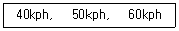
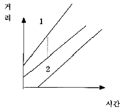
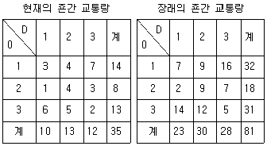
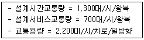
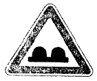

교통산업기사 (2002-09-08 기출문제)
1과목: 교통조사
1. 대도시 지역에서 높은 조사비용과 조사기간의 장기화 때문에 가구방문조사를 실시할 수 없는 여건에서 가구방문의 대안으로 실시하는 조사방법은?
- 학생이용설문조사
- 직장방문조사
- 우편에 의한 회수법
- 대중교통수단 이용객조사
(정답률: 알수없음)

2. 다음 3대의 시간평균속도 자료로부터 공간평균속도를 계산하면?

- 48.6kph
- 50.0kph
- 51.3kph
- 52.4kph
(정답률: 알수없음)
3. 속도조사에 관한 다음 설명중 틀린 것은?
- 속도자료의 분산값이 크다는 것은 교통류가 안정적이라는 의미이다.
- 속도자료를 분석할 때에는 몇 개의 계급구간으로 나누어 통계처리하는 것이 일반적이다.
- 85퍼센타일(Percentile)속도는 속도가 낮은 차량부터 순서대로 늘어 놓아 85%에 해당되는 속도이다.
- 속도의 산술평균값과 중앙값은 일치하지 않을수도 있다.
(정답률: 알수없음)
4. 시간당 교통량이 2200대/시 일 때 평균차두시간은?
- 약1.4초
- 약1.6초
- 약1.8초
- 약2.0초
(정답률: 알수없음)
5. 다음 중 통행수단을 선택하는데 영향을 미치는 요소중에서 가장 관계가 적은 것은?
- 통행비용
- 통행시간
- 소득
- 통행목적
(정답률: 알수없음)
6. 교통량 중 신호등, 표지, 노면표시, 일방통행 등 교통규제시설 설치에 이용되는 교통량은?
- 일평균교통량
- 시간교통량
- 연교통량
- 첨두시간 교통량
(정답률: 알수없음)
7. 보행자 교통의 실태조사에 대한 설명으로 잘못된 것은?
- 도심부에서는 점심식사시간에 보행량이 적고 주거지는 많다.
- 측정방법은 대상구역을 Zoning하여 각 존별 가로구간에서 측정한다.
- 조사시간대는 각 조사지역을 답사한 후 오전, 오후, 정오의 각 첨두 및 비첨두시간을 선택하여 조사한다.
- 이면도로의 교통사정에 적합한 안전시설의 선택적 배치, 안전시설과의 효과적인 결합방안에 관한 조사의 일부로서 행해진다.
(정답률: 알수없음)
8. 다음 중 첨두시간교통량의 응용분야가 아닌 것은?
- 차로수 및 교차로 등의 도로기하구조설계
- 도로망의 개선 타당성 및 투자우선순위의 결정
- 신호등, 노면표시 등 교통관제시설의 계획
- 교통용량의 산출 및 개선안 제시
(정답률: 알수없음)
9. 다음 중 기종점조사를 검증하기 위한 조사는?
- 영업용차량 조사
- 스크린라인 조사
- 가구방문 조사
- 주행차량 조사
(정답률: 알수없음)
10. 차량의 안전한 주행과 도로의 구조 등을 감안하여 설정한 속도는?
- 설계속도
- 주행속도
- 통행속도
- 자유속도
(정답률: 알수없음)
11. 다음 중 대중교통 서비스를 개선하기 위한 대중교통의 조사항목과 거리가 먼 것은?
- 통행시간 및 지체시간 조사
- 승하차인원 조사
- 운행준수여부
- 교차로별 버스교통량 조사
(정답률: 알수없음)
12. 다음 중 주차수요추정 기법과 거리가 먼 것은?
- 노측면접 조사
- 주차발생원단위 조사
- 자동차기종점 조사
- 누적주차수요추정법
(정답률: 알수없음)
13. 4단계 수요추정법을 이용하여 교통수요를 예측하는 과정에서 죤간 거리의 조사는 어떤 단계에 해당되는가?
- 발생교통량예측
- 분포교통량예측
- 교통수단분담예측
- 배분교통량예측
(정답률: 알수없음)
14. 다음 중 한 주차 시설의 주차 회전율을 구하기 위해 행하는 조사는?
- 누적주차대수조사
- 차량번호판조사
- 주차시설조사
- 앙케이트조사
(정답률: 알수없음)
15. 어느 도로 교통류의 속도조사를 위한 총 예산으로 100만원이 책정되어 있다. 만약 차량 당 속도측정, 분석 등을 위한 비용이 2,500원이고 예산을 모두 사용하여 신뢰구간 95% (K=2), 그리고 표준오차가 3km/h인 조사를 한다면 허용오차는 얼마가 될까?
- 0.25 km/h
- 0.3 km/h
- 0.35 km/h
- 0.4 km/h
(정답률: 알수없음)
16. 다음 중 교통밀도 조사방법이 아닌 것은?
- 항공사진 관측법
- 지상사진 관측법
- 입출량법
- 차량번호판 조사법
(정답률: 알수없음)
17. 다음 중 도시 지역 가구 구성원의 통행 특성을 파악하기 위한 가구면접조사의 내용에 포함되지 되지 않는 것은?
- 통행기종점
- 교통사고 유무
- 이용교통수단
- 통행목적
(정답률: 알수없음)
18. 다음 중 표본 조사의 특징을 바르게 설명한 것은?
- 표본 오차가 없다.
- 전수조사에 비해 비용이 적게 든다.
- 전수조사에 비해 조사원의 수가 많이 필요하다.
- 표본의 수는 적을수록 좋다.
(정답률: 알수없음)
19. 일정 지역의 현재 교통 여건을 파악 분석하기 위해 필요한 자료가 아닌 것은?
- 터미널승객조사 자료
- 토지이용형태 자료
- 인구조사 자료
- O-D조사 자료
(정답률: 알수없음)
20. 다음 중 노상주차에 대한 조사방법이 아닌 것은?
- 공중사진판독에 의한 관측조사
- 플레이트식 단속조사
- 설문조사
- 유출입차량대수 조사
(정답률: 알수없음)
2과목: 교통운영
21. 대기행렬 분석에 필요한 입력 자료가 아닌 것은?
- 평균도착률
- 통과 차량수
- 도착분포의 형태
- 평균서비스율
(정답률: 알수없음)
22. 서비스 수준별 교통류 상태에서 운전속도가 떨어지고 약간의 지체가 발생하는 서비스 수준은?
- C
- D
- E
- F
(정답률: 알수없음)
23. 교차로에서 다음과 같은 조건이 주어 졌을 때 황색시간을 결정하면? (지각반응시간: 1초, 접근속도: 60km/h, 차량의 임계감속도: 5 m/sec2, 차량의 길이: 5 m, 교차로 횡단길이: 20m)
- 3.5 초
- 4.2 초
- 5.5 초
- 6.3 초
(정답률: 알수없음)
24. 양방향 2차로 도로의 교통류 특성에 대한 설명으로 틀린 것은?
- 용량상의 문제보다는 안전문제가 더욱 강조된다.
- 교통류의 상태는 교통량과 함께 추월시거가 얼마만큼 확보되었는가에 따라 결정된다.
- 용량분석과정은 한방향 교통량을 기준으로 한다.
- 저속차량이 교통량에 미치는 영향이 매우 크다.
(정답률: 알수없음)
25. 연평균 일교통량을 표시하고 있는 것은?
- AADT
- ADT
- PHV
- DHV
(정답률: 알수없음)
26. 종단 경사가 7%인 산악지대의 편도 1차로 도로에서 정상까지 올라가는 데 화물차의 운행 때문에 혼잡이 야기되고 있다. 이 때 효과적인 운영방안은?
- 오르막차로 설치
- 화물차 운행 금지
- 신설 노선 건설로 구배를 5% 미만으로 인하
- 왕복 4차로로 확장
(정답률: 알수없음)
27. 다음 중 일방통행의 장점이 아닌 것은?
- 용량증대
- 상충수 감소
- 신호시간 조절 용이
- 통행거리의 감소
(정답률: 알수없음)
28. 다음중 교통통제설비의 기본조건에 속하지 않는 것은?
- 도로 이용자에게 존중될 수 있어야 한다.
- 간단명료한 의미를 전달할 수 있어야 한다.
- 반응을 위한 시간적인 여유를 가질수 있는 곳에 설치되어야 한다.
- 저렴한 가격의 자재로 만들어져야 한다.
(정답률: 알수없음)
29. 다음 중 불균형 통행도로(가변차로제)의 장점이 아닌 것은?
- 필요한 방향에 추가 용량 제공
- 교통사고 감소
- 적절한 평행도로가 없어도 시행가능
- 대중교통 노선 조정 불필요
(정답률: 알수없음)
30. 교통량이 9,000대/시이고 공간 평균속도가 60㎞/h인 도로의 교통밀도는?
- 90대/㎞
- 100대/㎞
- 150대/㎞
- 180대/㎞
(정답률: 알수없음)
31. V1 = 9P1-0.6 × P20.3 과 같은 모형의 지하철 통행비용에 대한 택시의 승객 수요의 교차 탄력성은? (단, V1 : 택시의 승객수요, P1 : 택시의 통행비용, P2 : 지하철의 통행비용)
- 2
- 9
- 0.3
- 0.6
(정답률: 알수없음)
32. 신호교차로에서의 지체에 직접적인 영향을 주지 않는 것은?
- 교통량/용량
- 유효녹색시간
- 주기
- 현시순서
(정답률: 알수없음)
33. 공간, 시간 평균속도의 설명중 틀린 것은?
- 공간평균속도는 속도의 조화평균이다.
- 공간평균속도는 교통류분석에 이용한다.
- 시간평균속도는 교통사고 분석에 이용한다.
- 시간평균속도는 공간평균속도보다 항상 낮은 값을 갖는다.
(정답률: 알수없음)
34. 자동차 도착분포 중 완전히 무작위로 드물게 발생하는 이산형 사상을 나타내는데 사용되는 이론적 확률분포는?
- Binomial 분포
- Negative Binomial 분포
- Poisson 분포
- Geometric 분포
(정답률: 알수없음)
35. 용량분석을 할 때 신호교차로 접근로의 이상적 조건이 아닌 것은?
- 3.0m 이상의 차로폭
- 종단구배 0%
- 교차로 정지선에서 90m이내에 주, 정차가 없는 상태
- 교통류가 승용차로만 구성
(정답률: 알수없음)
36. 충격파(shock wave) 이론의 경계선이 아닌 것은?
- 전면정지
- 후면정지
- 후방형성
- 교차상충
(정답률: 알수없음)
37. 교통류의 특성을 나타내는 기본적인 요소에 포함되지 않는 것은?
- 교통량(Volume)
- 속도(Speed)
- 밀도(Density)
- 서비스수준(Level of service)
(정답률: 알수없음)
38. 실제의 도로 및 교통조건하에서 교통수요에 대한 적절한 서비스수준을 제공하며 단위시간당 최대한으로 처리할 수 있는 교통량은 무엇이라 하는가?
- 기본교통용량
- 가능교통용량
- 실용교통용량
- 설계교통용량
(정답률: 알수없음)
39. 다음 그림은 인접한 차량들의 괘적을 그린 시공도(Time-distance Diagram)이다. 1과 2를 잇는 점선은 무엇을 가리키는가?

- headway
- 차간거리
- 속도
- 두 차량의 속도차
(정답률: 알수없음)
40. 간선도로시스템의 연동신호시간을 구하기 위한 기법으로 틀린 것은?
- 시공도기법(Time-space diagram technique)
- Webster 방식(Webster Methods)
- 옵라인컴퓨터기법(Off-line computer technique)
- 온라인컴퓨터기법(On-line computer technique)
(정답률: 알수없음)
3과목: 교통계획
41. 도시공간에 대한 사회적 수요와 토지이용 형태에 대한 최근의 변화추세에 부합되지 않는 것은 ?
- 도시공간의 이용이 광역화되고 있다.
- 용도간의 격리를 전제로 한 지역지구제를 더욱 강화시킨다.
- 직장과 거주지와의 공간분리개념이 변화하고 있다.
- 생활의 질에 대한 비중이 커지고 있다.
(정답률: 알수없음)
42. 도시토지이용예측을 위한 가장 일반적인 모형으로 평가되고 있는 PLUM(Projective Land Use Model)의 특징에 대한 설명으로 틀린 것은?
- 가로망의 최단경로망을 자유통행과 피크통행의 상황에 대해 각각 결정한다.
- Lowry 모형이나 TOMM과는 달리 각 존별로 토지이용회계(land use accounting)를 적용한다.
- 비교정태(comparative statics)에 입각한 배분개념을 적용한다.
- 택지개발에 따른 제약은 토지수용한계와 관련하여 이용밀도의 고도화를 위한 수요로 작용한다.
(정답률: 알수없음)
43. 공공투자의 경제성 평가지표의 하나로서, 편익과 비용의 순현재가치의 합계가 같아지는 할인율을 무엇이라 하는가?
- 편익/비용비(benefit/cost ratio)
- 순현재가치(net present value)
- 내부수익율(internal rate of return)
- 초기년도 편익비(first-year benefit/cost ratio)
(정답률: 알수없음)
44. 교통이 편리하고 토지가 평탄하며 통근 및 소비동선으로 외부지역과 연결성이 좋아야하는 지역은?
- 녹지지역
- 상업지역
- 공업지역
- 주거지역
(정답률: 알수없음)
45. 다음은 현재 죤간 통행량을 균일성장율법으로 분포시킨 장래 죤간 통행분포량을 나타낸 것이다. 평균성장율은?

- 1.9
- 2.3
- 2.7
- 3.4
(정답률: 알수없음)
46. 교통체증, 도로망의 교통처리능력 제고 등 당면하고 있는 문제점을 해결할 수 있는 교통체계관리기법의 개선전략으로 맞지 않는 것은?
- 도시특성에 적합한 교통체계 관리기법의 유형을 결정
- 교통담당부서를 다원화하고 개선시점을 장기적으로 추진
- 대규모가 아닌 적절한 재원을 투입하여 효율을 극대화
- 저투자 단기 개선사업임으로 각 기법의 효과에 대해 집행 후 모니터링하고 평가시행
(정답률: 알수없음)
47. 교통수요예측의 결과물로서, 도로의 폭(차로수)의 결정에 가장 중요한 요소는?
- 노선배정교통량
- 교통발생량
- 교통수단선택
- 지구교통량
(정답률: 알수없음)
48. 개별행태모형의 특징이 아닌 것은?
- 공간적, 시간적인 제약으로 이전적용이 어렵다.
- 어떠한 지역 단위에도 이용될수 있는 장점이 있다.
- 비용의 절감과 짧은시간에 결과를 도출할 수 있다.
- 교통계획의 개략적 평가에 쉽게 적용할 수 있다.
(정답률: 알수없음)
49. 철도교통의 통행배정에 주로 사용되는 모형은?
- All or Nothing Model
- Incremental Algorithm
- Equilibrium Algorithm
- Trip End Modal Split Model
(정답률: 알수없음)
50. 다음의 도로 가운데 이동성이 가장 좋은 도로는?
- 주간선도로
- 보조간선도로
- 집산도로
- 국지도로
(정답률: 알수없음)
51. 어떤 관광도시의 철도역과 관광명소를 연결하는 두 개의 통행경로(paths)가 있으며, 이들은 각기 하나의 링크(link)로 이루어져 있다. 그리고 각 통행경로의 통행시간함수(performance function)는 다음과 같이 주어져 있다. 통행경로 1: t1 = 2 + x1, 통행경로 2: t2 = 1 + 2x2 이 도시의 철도역에서 출발하여 관광명소로 가는 통행량은 5대/분이다. 통행경로 1의 사용자균형 통행량은? (여기서, x1 : 통행경로 1의 통행량, x2 : 통행경로2의 통행량)
- 1대/분
- 2대/분
- 3대/분
- 4대/분
(정답률: 알수없음)
52. 다음중 교통계획의 기능으로 알맞지 않은 것은?
- 근시안적인 교통관련 계획의 장기적인 테두리를 설정해 준다.
- 즉흥적인 계획과 집행을 제어할 수 있다.
- 단기·중기·장기 교통정책의 독립성을 높여준다.
- 재원의 투자우선순위를 설정해 준다.
(정답률: 알수없음)
53. 다음중 교통계획 과정이 올바른 것은?
- 토지이용예측→통행예측→계획안 평가→계획안 수립
- 계획안 평가→계획안 수립→토지이용예측→통행예측
- 토지이용예측→통행예측→계획안 수립→계획안 평가
- 토지이용예측→계획안 수립→통행예측→계획안 평가
(정답률: 알수없음)
54. 다음의 대중교통요금제도중 국내의 대도시 시내버스에 일반적으로 적용되고 있는 제도는?
- 균일요금제
- 거리요금제
- 거리비례제
- 구간요금제
(정답률: 알수없음)
55. 버스노선망을 계획할 때 검토되는 내용이 아닌 것은?
- 도로망 및 노선망
- 운행횟수
- 배차계획
- 요금수준
(정답률: 알수없음)
56. 다음중 대중교통 전용차로제의 장점이 아닌 것은?
- 대중교통차량과 타 차량간의 마찰 방지 기능
- 대중교통의 통행시간을 단축
- 대중교통의 정시성 제고
- 교통통제 설비의 설치
(정답률: 알수없음)
57. 타 대중 교통수단과 비교한 지하철의 장점이 아닌 것은?
- 대량성
- 신속성
- 투자비
- 안전성
(정답률: 알수없음)
58. 도로망을 컴퓨터화하는 과정에서 도로시스템을 구성하는 요소로서 부적합한 것은?
- 링크(link)
- 죤중심(zone centroid)
- 노드(node)
- 기종점자료(O/D data)
(정답률: 알수없음)
59. 지구교통계획에서 인구규모 300∼500人인 곳의 도로유형은?
- 국지도로
- 고속도로
- 집산가로
- 주간선가로
(정답률: 알수없음)
60. 일반적인 지구교통계획에서 다루는 교통주체에 해당되지 않는 것은?
- 지구내에 있는 시설에 기종점을 가진 교통
- 지구내에서 발생하고 지구외로 유출되는 교통
- 지구내에서 발생하지 않고 지구외로 우회하는 교통
- 지구에 기종점을 가지고 있지 않고 지구내 가로를 통과하는 교통
(정답률: 알수없음)
4과목: 교통안전
61. 교통사고 연구를 위해 설정하는 표준구간장으로 적정한 것은?
- 도시지역 0.1km 지방지역 1km
- 도시지역 0.2km 지방지역 2km
- 도시지역 0.3km 지방지역 3km
- 도시지역 0.4km 지방지역 4km
(정답률: 알수없음)
62. 교통안전 전략으로서 노출통제에 해당하는 것은?
- 운전자 통제
- 가로조명
- 속도제한
- 재택근무
(정답률: 알수없음)
63. 횡단보도에서 보행자 신호기의 녹색점멸이 의미하는 것은?
- 진입가-횡단불가
- 진입가-횡단가
- 진입불가-횡단불가
- 진입불가-횡단가
(정답률: 알수없음)
64. 교통사고 재현에 필요하지 않은 사항은?
- 차량의 진로
- 차량의 속도
- 최후 정지지점
- 응급차 도착시간
(정답률: 알수없음)
65. 교통량을 감소시켜 교통안전을 도모하는 대책중 가장 적절한 것은?
- 주행 km에 따른 보험료 책정제도
- 도로확장
- 보행자 공간확보
- 무인 과속단속카메라 설치
(정답률: 알수없음)
66. 교통사고에서의 미끄러짐에 대한 설명 중 틀린 것은?
- Skid mark의 모양과 길이는 교통사고재현에서 가장 중요한 요소이다.
- Skid mark의 길이는 사고당시의 속도를 추정할 수 있다.
- 일반적으로 활주흔의 길이중에서 가장 짧은 길이를 사고재현에 사용한다.
- 활주흔이 나타나다가 중간에 끊어지고 다시 시작되는 경우도 있다.
(정답률: 알수없음)
67. 주 교통흐름에 시간대별로 적응하여 교통용량을 증대함으로써 방향별 서비스 수준을 균형화시키는 교통운영 방식은?
- 일방통행제
- 가변차로제
- 좌회전능률차로제
- 버스전용차로제
(정답률: 알수없음)
68. 운전자가 위험상태를 발견하고 브레이크를 밟아야 하겠다고 판단하면서 발을 엑셀에서 브레이크로 이동시켜 브레이크가 작동하기 직전까지 주행한 거리는?
- 공주거리
- 제동거리
- 정지거리
- 인지거리
(정답률: 알수없음)
69. 한 지점에서 3년간 50건의 교통사고가 발생하였다. 일평균 교통량이 7,500대 일 때, 교통사고율에 의한 방법으로 계산하여 차량 1백만대당의 사고율을 구하면?
- 0.⑤
- 1.125
- 0.125
- 6.09
(정답률: 알수없음)
70. 방호책(Guard Rail)의 기능이 아닌 것은?
- 주행차량의 도로 이탈 방지
- 운전자의 시선 유도
- 도로 이탈 차량의 진행방향 복원
- 차량의 속도 저하
(정답률: 알수없음)
71. 교통사고 유발요인을 인적, 차량, 도로물리, 환경요인으로 분류할 때 환경요인이 아닌 것은?
- 도로 표지
- 차량 교통량
- 기후 조건
- 교통 여건
(정답률: 알수없음)
72. 교통사고 3대 요인에 해당하지 않는 것은?
- 도로요인
- 차량요인
- 인적요인
- 기상요인
(정답률: 알수없음)
73. 다음 안전대책 중 안전성과 이동성이 상충되지 않는 것은?
- 안전벨트
- 속도제한
- 과속방지턱
- 교통진정조치
(정답률: 알수없음)
74. 고속도로의 사고율이 낮은 이유가 아닌 것은?
- 넉넉한 도로폭
- 포장된 길어깨
- 연석의 설치
- 선형이 비교적 직선
(정답률: 알수없음)
75. 다음의 주차와 교통사고와의 상관관계에 대한 설명 중 맞는 것은?
- 노상주차를 금지하면 사고율이 높아진다.
- 각도주차보다 평행주차의 사고율이 낮다.
- 교차로 부근이 주차로 인한 사고위험이 낮다.
- 속도와 교통량은 주차사고와 관련이 없다.
(정답률: 알수없음)
76. 체중 60㎏인 운전자에 대하여 사고발생 3시간후에 혈중알코올농도를 측정하였더니 0.⑤%가 나왔다. 사고당시의 혈중알코올농도는 얼마로 추정되는가? (단, 60㎏의 체중인 사람의 경우 시간당 혈중알코올 농도 감소치는 0.027이다.)
- 0.13%
- 0.07%
- 0.15%
- 1.62%
(정답률: 알수없음)
77. 교통통제시설 설계시 주된 고려사항이 아닌 것은?
- 표지판의 크기 및 형태
- 도로환경과의 조화
- 청결성
- 시인성
(정답률: 알수없음)
78. 다음 중 교차로 사고분석에 주로 사용되는 교통사고율은?
- 차량 10,000대당 사고
- 인구 10만명당 사고
- 진입차량 100만대당 사고
- 통행량 1억대· ㎞당 사고
(정답률: 알수없음)
79. 아래의 사고충돌도 표시기호가 나타내는 사고유형은?
- 통제상실
- 전복사고
- 추돌사고
- 직각충돌
(정답률: 알수없음)
80. 설계속도 60㎞/h인 도로에서 최소 곡선반경은? (단,편구배는 0.04, 허용 마찰계수는 0.15)
- 140m
- 150m
- 160m
- 170m
(정답률: 알수없음)
5과목: 교통시설
81. 다음 중 주차장법에 의한 주차장의 구분과 관계없는 것은?
- 공공주차장
- 노상(路上)주차장
- 노외(路外)주차장
- 건축물 부속 주차장
(정답률: 알수없음)
82. 도시지역의 보조간선도로에 대한 내용으로 맞는 것은?
- 지구내의 교통을 주로 담당한다.
- 주간선도로보다는 통행량과 통행길이가 짧다.
- 지구내의 주거단위에 직접 연계되는 도로이다.
- 지역간 간선도로의 도시내 통과역활을 담당한다.
(정답률: 알수없음)
83. 자동차 전용도로에 설치하는 버스정류장의 구성요소가 아닌 것은?
- 감속차로
- 가속차로
- 변이구간
- 버스정차로
(정답률: 알수없음)
84. 출입교통을 1개소에 모을 수 있어 요금징수 및 관리상 편리하여 유료도로에 주로 사용되는 입체교차 형식은?
- 클로버형
- 트럼펫형
- 다이아몬드형
- 로터리형
(정답률: 알수없음)
85. 어느 건물의 주차용량이 55대이고, 주차 이용대수가 하루 350대, 평균 주차시간이 2시간이다. 주차장이 하루 18시간 개방된다고 할 때 이 주차장의 주차효율은?
- 0.61
- 0.71
- 0.81
- 0.91
(정답률: 알수없음)
86. 아스팔트 콘크리트 포장도로의 표층이 갖추어야 할 성질로 거리가 먼 것은?
- 안정성 및 내구성
- 가요성 및 미끄럼 저항성
- 강성 및 휨강도
- 불투수성 및 피로저항성
(정답률: 알수없음)
87. 평면 교차로에서 우회전 차로의 효과가 아닌 것은?
- 도로 교통용량이 증대한다.
- 정지선을 전진시킬 수 있다.
- 직진 교통류의 혼란이 감소된다.
- 도로의 설계속도가 감소한다.
(정답률: 알수없음)
88. 횡단보도육교의 구조기준으로 맞게 연결된 것은?
- 육교의 최소폭 - 1.5m
- 계단부의 단높이(표준) - 20cm
- 경사로의 경사도 - 30%이하
- 난간높이 - 1.5m이상
(정답률: 알수없음)
89. 설계속도 80km/h일 때 완화곡선의 최소길이는 얼마인가?
- 40m
- 50m
- 60m
- 70m
(정답률: 알수없음)
90. 다음 조건에서 차로수는 얼마로 하면 적정한가?

- 1차로
- 2차로
- 3차로
- 5차로
(정답률: 알수없음)
91. 우측 길어깨 폭이 규정치 이하인 도로에서 고장차 등으로 인해 다른 차량의 소통이 지장을 받지 않도록 한 시설로 고장차 등의 일시적 대피장소로서 적당한 간격으로 설치되는 것은?
- 비상주차대
- 버스정차대
- 노상주차장
- 휴게소
(정답률: 알수없음)
92. 각 지점의 포장면 또는 노측에 소정의 전자감응 장치를 설치하여 교통량, 밀도 등을 자동측정한 후 중앙에서 기록하여 평상시 결과에 대한 이상시 상황을 판단하기 위한 시스템은?
- 교통신호기
- 모니터 시스템
- 교통류 감지기
- 도로정보 안내표지
(정답률: 알수없음)
93. 다음 중 안전표지의 설명으로 옳은 것은?

- 지시표지, 터널표지
- 규제표지, 노면 고르지 못함 표지
- 주의표지, 노면 고르지 못함 표지
- 주의표지, 터널표지
(정답률: 알수없음)
94. 설계속도 100km/h의 도로를 설계할 경우 완화 곡선을 생략할 수 있는 곡선반경은?
- 800m
- 1,000m
- 1,500m
- 2,000m
(정답률: 알수없음)
95. 도로의 반사경으로 일반적으로 이용되는 것은?
- 평면거울
- 오목거울
- 볼록거울
- 복합거울
(정답률: 알수없음)
96. 다음은 비상주차대에 관한 사항이다. 옳지 않은 것은?
- 고속도로에서의 비상주차대 설치간격은 500m이다.
- 고속도로에서 우측길어깨의 폭원이 2.50m 미만일 경우에는 비상주차대를 설치해야 한다.
- 도시고속도로, 주간선도로로서 우측길어깨의 폭원이 2.0m 미만일 경우에는 계획교통량이 적은 경우를 제외하고 비상주차대를 설치해야 한다.
- 기타 지방지역의 일반도로에 있어서도 교통량이 많고 필요하다고 인정될 경우에는 비상주차대를 설치해야 한다.
(정답률: 알수없음)
97. 평면교차로 설계시 설계기준이 아닌 것은?
- 교통운영
- 도로폭
- 곡선 반경
- 교차점간 간격
(정답률: 알수없음)
98. 노면을 구성하는 요소가 아닌 것은?
- 배수구
- 차도
- 길어깨
- 중앙분리대
(정답률: 알수없음)
99. 인터체인지의 형식을 분류하는 방법중에서 교통동선의 처리 방법에 의한 분류에 속하는 것은?
- 3 갈래 교차
- 4 갈래 교차
- 다갈래 교차
- 완전입체교차
(정답률: 알수없음)
100. 다음 중 평면교차로 설계시 고려해야 할 기본 원리에 어긋나는 것은?
- 상충횟수의 최소화
- 상충 교통류간의 속도 차이를 크게 한다.
- 기하구조와 교통관제 운영 방법의 조화
- 교통특성이 서로 다른 교통류의 분리
(정답률: 알수없음)